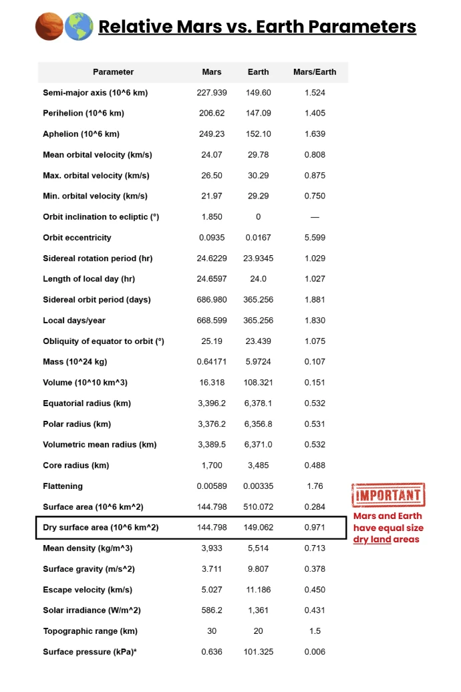
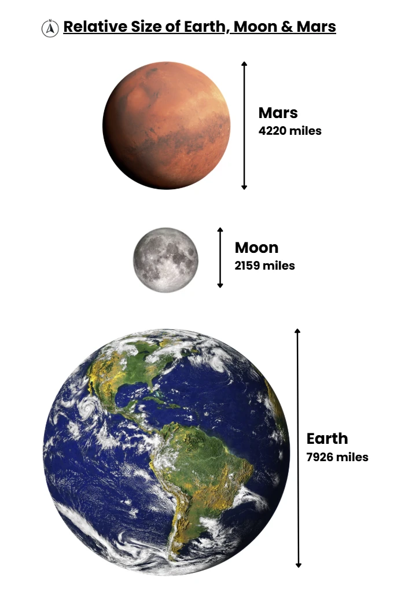
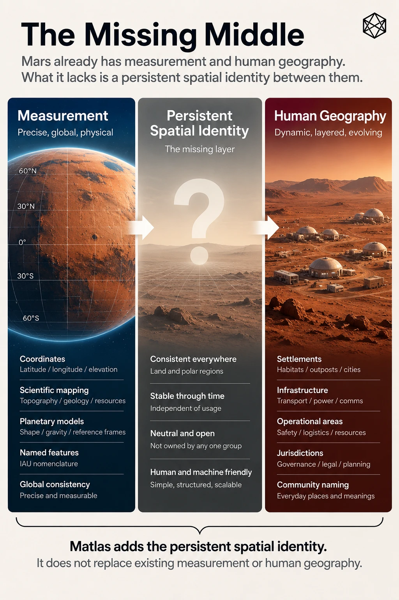

B - The Mars Surface: Zones & Bands
Mars Planet Surface
Summary. Mars is a smaller world than Earth—about half Earth’s diameter—but because it lacks global oceans, its entire surface is land.
The result is a memorable rule of thumb: Mars’ total surface area (~145 million km²) is roughly equal to the area of all Earth’s continents combined (~149 million km²).
The Moon, by contrast, is far smaller, with only ~38 million km² of surface—about one-quarter of Mars.
Planetary dimensions at a glance
- Mean radius (km): Earth 6,371 | Mars 3,390 | Moon 1,737.
- Diameter (km): Earth 12,742 | Mars 6,779 | Moon 3,474.
- Equatorial circumference (km, approx.): Earth 40,075 | Mars ~21,000 | Moon ~10,900.
- Surface gravity (m·s⁻²): Earth 9.81 | Mars 3.71 | Moon 1.62.
Numbers from NASA fact pages and standard references.
What the size means in practice
- Map scale & travel distance – A transcontinental trek on Earth (say, 5,000 km) corresponds to a similar long-haul traverse on Mars; planet-spanning missions there are genuinely intercontinental in scope. The equatorial lap of Mars is roughly ~21,000 km—a little over half of Earth’s—so great-circle trips are shorter, but still planetary in scale.
- Horizon distance (human “feel”) – For an eye height ~1.7 m, the geometric horizon on Earth is ~4.7 km; on Mars it’s ~3.4 km (smaller radius curves away sooner), so the horizon feels closer, with landforms dropping below it more quickly.
- Gravity context – Mars’ surface gravity is ~0.38 g (about ⅓ of Earth’s), while the Moon’s is ~0.17 g. This doesn’t change area, but it changes how terrain is experienced—from how far dust is lofted to how easily a rover (or person) can climb a slope.

Domain | Mars Reality | Primary Implications |
|---|---|---|
Air & Pressure | ~95% CO₂; 0.6–0.8 kPa lowlands; higher in deep basins | EVA is always pressurised; suit design favors dust sealing over wind load; boiling point constraints for fluids |
Light & Visibility | TOA ~590 W/m² (~43% Earth); τ 0.3→5+ governs ground light; blue sunsets, amber days | Power planning by τ; lighting as psychology and protocol; operations shift toward mornings/clear windows |
Wind & Abrasion | Gusts 25–30 m/s common aloft; low dynamic pressure; active sand saltation | Structural shove modest; abrasion/infiltration dominant; sacrificial skins, replaceable “eyebrows,” frequent cleaning |
Temperature & Thermal | Mean ~210 K; large diurnal swings; basins milder, plateaus harsher | Radiative & ground-coupled thermal design; trenching; radiator scheduling; heat treated as inventory |
Sound & Comms | ~240–250 m/s; frequency-dependent speeds; strong attenuation | Acoustic cues unreliable outdoors; visual & haptic signaling favored; door-tones and pressure chimes standard |
Weather & Storms | No rain; frost/CO₂ snow; local/regional storms; planet-encircling veils episodic | Convoy spacing by visibility; storm playbooks; storage and non-solar baseload mandatory |
Seasons & Pressure Tide | ~25–30% atmospheric CO₂ migrates poleward each winter | Barometric planning baked into rota; valve scheduling; calendar aligned to pressure reality |
Landscape & Mobility | Plains, canyonlands, crater floors, lava aprons, polar plateaus | Route grading; inversion hazards; dust pools; honest maps and conservative reach rings |
Dust & Cleanliness | Micron-scale fines; electrostatic adhesion; persistent lofting | Design for cleanability; filter life as KPI; coatings wear tracking; dust-lock etiquette as civic norm |


Zones & Bands
The Zones–Bands–Zands (ZBS) Coordinate System
The ZBS system (Zones, Bands, and Zands) is a universal planetary surface division method designed for mapping, navigation, and administrative use on any roughly spherical astronomical body with a radius greater than 250 km. It is intended for use on planets, moons, and large asteroids that may become sites of human exploration and settlement.
The system divides the surface of a body into standardised, repeatable units that can be referenced consistently across scientific, operational, and settlement activities. It is designed to work on Mars, the Moon, and other bodies lacking natural geographic boundaries, and can also be applied to Earth for comparative purposes.
The ZBS system divides a planetary body’s surface into three primary components:
- Zones – longitudinal divisions of 15° each.
- Bands – latitudinal strips of 6° each between ±72°.
- Zands (ZoneBands) – intersections of Zones and Bands, representing quasi-equal-area grid cells.
1. Zones - Zones divide the planet’s surface into 24 longitudinal slices, each 15° wide.
- A–X: cover the 360° equatorial and mid-latitude belt (0–360° in 15° steps).
- Extent: Zones run continuously from pole to pole.
- Count: Always 24.
- Provide a natural east–west indexing system.
- Align with planetary timekeeping, enabling direct correspondence with “time zones.”
2. Bands - Bands are latitudinal strips, each 6° tall, spanning from 72°S to 72°N.
- Provide a consistent north–south index.
- Facilitate mapping of climate belts, daylight hours, and settlement zones.
- Labelling: 24 Bands (b–y), with a–m in the northern hemisphere and n–z in the southern.
- Extent: Total of 24 Bands cover the sub-polar belt.
- Note – “Band a” is the northern polar region, and “Band z” is the southern polar region
3. Zands (a.k.a. ZoneBands) - A Zand is the intersection of one Zone and one Band. Provide manageable operational units (~200–300k km²). Nest cleanly into larger Quads and smaller Provinces.
- Sub-polar Zands: Dimensions: 6° latitude × 15° longitude. Area ranges from ~145,000 km² (near 72° latitude) to ~318,000 km² (at equator). Total: 24 × 24 = 576.
- Polar Zands: Above ±72°, each polar cap is divided into 24 wedges (15° wide, 18° tall). Each wedge = one Polar Zand. Total: 48 (24 north, 24 south).
- Global Total: 624 Zands per body.
Benefits
- Scalability: From Quads (~6,000,000 km²) to Zands (~200,000 km²) to Clicks (~1 km²).
- Neutrality: Independent of national mapping traditions.
- Predictability: Zones = 15° longitude, Bands = 6° latitude.
- Integration with timekeeping: Longitudinal Zones double as planetary time zones.
- Universality: Works on any spherical body >250 km radius (e.g. Mars, Ceres, Titan, etc.)
Applicability
The ZBS system has been applied to all settlement bodies in the Solar System, including: Mars, The Moon, Ceres, Europa, Ganymede, Callisto, Titan, Enceladus, Triton. Because these bodies lack large oceans or natural boundary markers, ZBS provides a neutral, consistent grid for exploration, navigation, and eventual settlement governance.
Zones of Longitude (24 zones – 15° each)
Letter (Zone Name) | Longitude Range (° E) | Name & Justification |
|---|---|---|
A – Airy | 0–15 | After crater Airy-0, the prime meridian point. |
B – Boreas | 15–30 | Inspired by Borealis (northern plains). |
C – Casius | 30–45 | After Casius Montes, a range in this sector. |
D – Dorsa | 45–60 | “Dorsa” refers to wrinkle ridges found here. |
E – Eos | 60–75 | Named for Eos Chasma in Valles Marineris region. |
F – Fortuna | 75–90 | After Fortuna Fossae, a network of troughs. |
G – Galle | 90–105 | For Galle Crater (“the happy face” crater). |
H – Hebes | 105–120 | Hebes Chasma, a prominent enclosed canyon. |
I – Isidis | 120–135 | Isidis Planitia impact basin. |
J – Juventae | 135–150 | Juventae Chasma, part of the Valles Marineris. |
K – Kasei | 150–165 | Kasei Valles, large outflow channel system. |
L – Libmont | 165–180 | Libya Montes, hilly highland region. |
M – Mangala | 180–195 (=-180 to -165) | Mangala Valles, another major channel network. |
N – Nili | 195–210 (-165 to -150) | Nili Fossae region, fracture system with clay. |
O – Olympus | 210–225 (-150 to -135) | Olympus Mons, the tallest volcano. |
P – Phaethon | 225–240 (-135 to -120) | Inspired by Phlegra Montes nearby. |
Q – Quince | 240–255 (-120 to -105) | A shorter name derived from “Quince Planum”. |
R – Rimae | 255–270 (-105 to -90) | After Rimae (rilles) around Tharsis. |
S – Syriplan | 270–285 (-90 to -75) | Syria Planum volcanic plateau. |
T – Tharsis | 285–300 (-75 to -60) | The huge Tharsis volcanic rise. |
U – Utopia | 300–315 (-60 to -45) | Utopia Planitia, a large plain. |
V – Valles | 315–330 (-45 to -30) | From Valles Marineris (broader reference). |
W – Warrego | 330–345 (-30 to -15) | Warrego Valles channels. |
X – Xanthe | 345–360 (-15 to 0) | Xanthe Terra, rugged highlands. |
Bands of Latitude (24 zones – 6° each sub-polar)
Name | Description | Latitude Range (°N→°S) |
|---|---|---|
A – Aether | Extreme northern zone, named for the upper air or pure sky | +90.00° to +72.0° |
B – Borealis | Northern polar adjacent region, referencing the Borealis Basin | +72.0° to +66.0° |
C – Crya | Cold region with potential subsurface ice | +66.0° to +60.0° |
D – Drift | Zones of persistent dust drifts and dunes | +60.0° to +54.0° |
E – Esker | Layered terrain like Earth glacial eskers | +54.0° to +48.0° |
F – Frost | Mid-high latitudes with regular frost patterns | +48.0° to +42.0° |
G – Glint | High-reflectance zones from ice and seasonal changes | +42.0° to +36.0° |
H – Halo | Bands with halo-like atmospheric ice clouds | +36.0° to +30.0° |
I – Ignite | Named due to the bright clear summer skys | +30.0° to +24.0° |
J – Joule | Solar energy rich zone near equator, referencing thermal gain | +24.0° to +18.0° |
K – Kindle | Warmer belts where most power harvesting occurs | +18.0° to +12.0° |
L – Lucis | Latin for 'light', high-solar exposure area | +12.0° to +6.0° |
M – Meridion | Near Mars’ equator, central life and trade routes | +6.0° to -0.0° |
N – Niveus | Transition into southern hemisphere, 'snowy' | -0.0° to -6.0° |
O – Oxia | Named for Oxia Palus near equator, mineral-rich | -6.0° to -12.0° |
P – Pavonis | Named for Pavonis Mons near equator | -12.0° to -18.0° |
Q – Quietus | Silent, minimally active wind zones | -18.0° to -24.0° |
R – Ruber | Latin for red — classic Martian hue zones | -24.0° to -30.0° |
S – Stratis | Layered geological regions, visible sedimentation | -30.0° to -36.0° |
T – Tepidus | Mild southern zones, suitable for habitats | -36.0° to -42.0° |
U – Umbra | Shaded canyons and subsurface access | -42.0° to -48.0° |
V – Vallis | Southern valley-dominated terrain | -48.0° to -54.0° |
W – Whisper | Sparse communication zones or outposts | -54.0° to -60.0° |
X – Xerus | Dryest, rockiest southern bands | -60.0° to -66.0° |
Y – Yedoma | Permafrost analogue; ice-rich sediments | -66.0° to -72.0° |
Z – Zephyrus | Southern polar fringe, wind-swept zones | -72.0° to -90.0° |